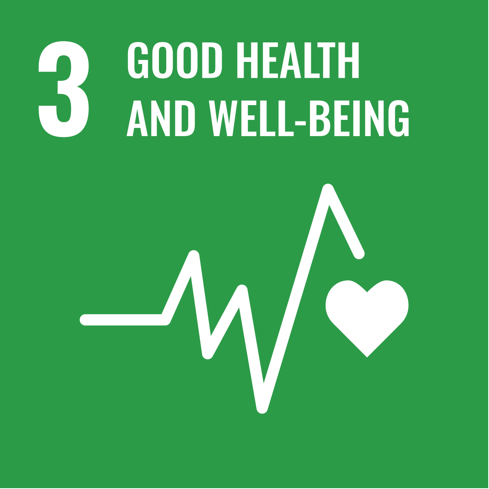

About Aqualogic
WHO recommends 2 liters of water daily. Dehydration causes decreased blood pressure, constipation, kidney problems, cramps, reduced performance in athletes and arrhythmias in the elderly. Excess intake causes nausea and wastes a vital resource. Based on the physical principle that water in the skin contains electrolytes that lower resistivity and has absorption bands in the near infrared, our solution aims to estimate the body's hydration. Because the skin's electrical conductivity varies between individuals, we add an important variable to our general model: body temperature, to detect the presence of sweat. On the other hand, we consider body mass irrelevant because the subcutaneous fat layer at the wrist is extremely thin. Later, our mobile app will collect binary feedback about the sensor measurements and thereby adapt the general model to each bracelet and user.
